1.6.1Machine Learning and Data Mining (Module 2)
Modeling and Evaluation
Matteo Francia
DISI — University of Bologna
m.francia@unibo.it
DISI — University of Bologna
m.francia@unibo.it


Modeling
Machine Learning is the science (and art) of programming computers so they can learn from data
Machine Learning is the field of study that gives computers the ability to learn without being explicitly programmed (Arthur Samuel, 1959)
A computer program is said to learn from experience E with respect to some task T and some performance measure P, if its performance on T, as measured by P, improves with experience E (Tom Mitchell, 1997)
Under and overfitting

https://xkcd.com/605/
Under and overfitting

https://xkcd.com/2048/
Disclaimer
Machine learning is not just the application of some algorithms to get the best accuracy…
- You need to understand why a model is behaving in a certain way!
- This is very important, especially for the exam!
- Do not stop at the first (good) result, questioning your algorithm/pipeline is essential!
- Do not rely on external code without knowing what the code is doing
- Remember, if you cannot explain your code the exam is not passed
Types of machine learning
There are many types of Machine Learning algorithms
We can classify them in broad categories, based on the following criteria:
- Whether they are trained with human supervision
- Supervised, unsupervised, semi-supervised, and reinforcement learning
- Whether they can learn incrementally
- Online, batch learning
- Whether they compare new to known data points, or detect patterns/models in the training
- Instance-based, model-based learning
scikit-learn: Machine Learning in Python
- This library is built upon NumPy, SciPy and Matplotlib
- Open source and commercially usable
- Covers many algorithms
- Supervised Learning: linear regression, support vector machine, etc.
- Unsupervised Learning: clustering, factor analysis, PCA, neural networks, etc.
- Validation: check the accuracy of supervised models on unseen data
- Feature extraction: extract the features from data to define the attributes in image and text data
scikit-learn
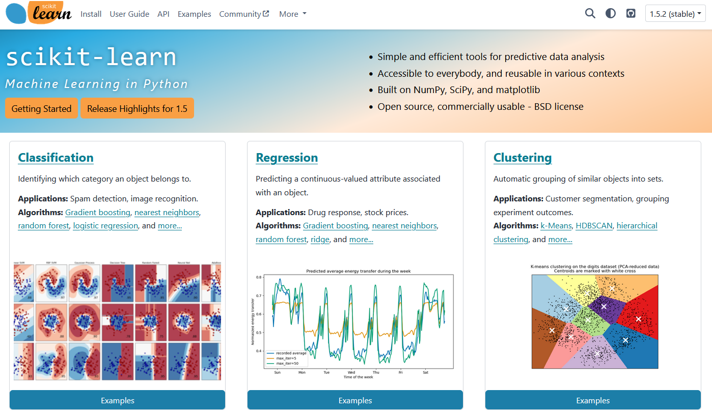Algorithms from sklearn
Estimator
Estimator: a consistent interface for a wide range of ML applications
- An algorithm that learns from the data (fitting the data) is an estimator
- It can be used with any of the algorithms like classification, regression, and clustering
All the parameters can be set when creating the estimator
All estimator objects expose a .fit() method that performs the training of the algorithm
Once the estimator is fitted, all the estimated parameters will be the attributes of the estimator object ending by an underscore
Finally, you can .predict() unseen data
scikit-learn in action
Choose a model by importing the appropriate estimator class from Scikit-learn (e.g., a decision tree)
Choose the model’s hyperparameters
Fit the model by calling .fit() method of the model instance
Applying the model to new data using the .predict() method to predict the labels for unknown data.
Evaluate the performance
Supervised learning
We focus on supervised learning tasks
- The training includes the desired solutions (i.e., labels)
- Classification
- Approximating a mapping function (
f) from input variables (X) to discrete output variables (y) - The mapping function predicts the class or category for a given observation
- E.g., a spam filter is trained with many example emails along with their class (
spamorham)
- Approximating a mapping function (
- Regression
- Approximating a mapping function (
f) from input variables (X) to a continuous output variable (y) - A continuous output variable is a real-value, such as an integer or floating-point value
- E.g., predict the
priceof a car given a set of features (mileage,age,brand, etc.)
- Approximating a mapping function (
Training and test sets
For a supervised learning problem we need:
- Input data along with labels
- Split data between test and training set
- How?
Scikit-learn uses data in the form of N-dimensional matrix
- Data as a feature matrix
X(e.g., a Pandas DataFrame)- The samples represent the individual objects described by the dataset (e.g., a
person) - The features describe each sample in a quantitative manner (e.g.,
ageandheight)
- The samples represent the individual objects described by the dataset (e.g., a
- Data as target array
y(e.g., a Pandas Series)- Along with features matrix, we also have the target array (label)
How do we distinguish target and feature columns?
Datasets in sklearn
The Iris dataset
Code
from sklearn.datasets import load_iris
import pandas as pd
iris = load_iris() # Load the iris dataset
df = pd.DataFrame(data=iris.data, columns=iris.feature_names) # Create a DataFrame with the iris data
df['species'] = iris.target # Add the species column to the DataFrame
# df['species'] = df['species'].map({0: 'setosa', 1: 'versicolor', 2: 'virginica'})
df| sepal length (cm) | sepal width (cm) | petal length (cm) | petal width (cm) | species | |
|---|---|---|---|---|---|
| 0 | 5.1 | 3.5 | 1.4 | 0.2 | 0 |
| 1 | 4.9 | 3.0 | 1.4 | 0.2 | 0 |
| 2 | 4.7 | 3.2 | 1.3 | 0.2 | 0 |
| 3 | 4.6 | 3.1 | 1.5 | 0.2 | 0 |
| 4 | 5.0 | 3.6 | 1.4 | 0.2 | 0 |
| ... | ... | ... | ... | ... | ... |
| 145 | 6.7 | 3.0 | 5.2 | 2.3 | 2 |
| 146 | 6.3 | 2.5 | 5.0 | 1.9 | 2 |
| 147 | 6.5 | 3.0 | 5.2 | 2.0 | 2 |
| 148 | 6.2 | 3.4 | 5.4 | 2.3 | 2 |
| 149 | 5.9 | 3.0 | 5.1 | 1.8 | 2 |
150 rows × 5 columns
Profiling
<class 'pandas.core.frame.DataFrame'>
RangeIndex: 150 entries, 0 to 149
Data columns (total 5 columns):
# Column Non-Null Count Dtype
--- ------ -------------- -----
0 sepal length (cm) 150 non-null float64
1 sepal width (cm) 150 non-null float64
2 petal length (cm) 150 non-null float64
3 petal width (cm) 150 non-null float64
4 species 150 non-null int64
dtypes: float64(4), int64(1)
memory usage: 6.0 KBTraining and test sets
Code
# Split the data into training and test sets
from sklearn.model_selection import train_test_split
# Split the data into X (features/data) and y (target/labels)
X = df.drop("species", axis=1)
y = df["species"]
seed=42 # Setup random seed. Why?
test_size=0.2
X_train, X_test, y_train, y_test = train_test_split(X, y, test_size=test_size, random_state=seed) # Split into train and test sets
print(f"X_train: {X_train.shape}")
print(f"y_train: {y_train.shape}")
print(f"X_test: {X_test.shape}")
print(f"y_test: {y_test.shape}")X_train: (120, 4)
y_train: (120,)
X_test: (30, 4)
y_test: (30,)Random seed and Reproducibility
Randomness is the lack of definite pattern or predictability in information.
- A random sequence of events, symbols or steps often has no order and does not follow an intelligible pattern or combination.
- Individual random events are, by definition, unpredictable (e.g., the roll of a dice)
- … but if there is a known probability distribution, the frequency of outcomes over repeated trials is predictable.
When throwing two dice, the outcome of any roll is unpredictable, but a sum of 7 will tend to occur twice as often as 4
Code
import matplotlib.pyplot as plt
import numpy as np
rolls = np.random.randint(1, 7, size=100000) # Simulate rolling a dice 100,000 times
rolls_two_dice = rolls + np.random.randint(1, 7, size=100000) # Simulate rolling two dice 100,000 times and summing the results
fig, axs = plt.subplots(1, 2, figsize=(8, 2.5))
for i, x in enumerate([rolls, rolls_two_dice]): # Plot the distribution
axs[i].hist(x, bins=np.arange(1, x.max() + 2) - 0.5, edgecolor='black', rwidth=0.8)
axs[i].set_xticks(range(1, x.max() + 1))
axs[i].set_xlabel('Value')
axs[i].set_ylabel('Frequency')
axs[i].set_title(f'100000 Rolls of {i + 1} Dice')
fig.tight_layout()
Pseudorandom number generator
Pseudorandom number generator (PRNG) is an algorithm for generating a sequence of numbers whose properties approximate the properties of sequences of random numbers.
- The PRNG-generated sequence is not truly random, because it is completely determined by an initial value, called seed
- Pseudorandom number generators are important in practice for their reproducibility.
Code
[5 2 5 5 5 4 6 2 1 5]
[3 4 1 1 5 3 5 6 5 4]
[4 5 3 5 5 2 3 3 3 5]
[4 5 3 5 5 2 3 3 3 5]
[4 5 3 5 5 2 3 3 3 5]
[4 3 6 5 2 4 6 6 2 4]Pseudorandom number generator
train_test_split(..., random_state=seed) randomly shuffles data before the split is implemented.
random_state=seed controls the randomness of the shuffle. This is essential
- Reproducibility: By using the same random_state, you can ensure that others can replicate your results exactly.
- Consistency in Model Evaluation: When comparing different models or tuning hyperparameters, the training test cannot change.
- Debugging and Testing: During the development phase, you might need to debug your code or test different configurations.

Why 42?
Let’s train some machine learning models
Models covered in this lecture
Let’s see how models behave
- Decision tree
- Random forest
- k-NN
It is important to understand the model dynamics!
- … not only the final result!
- (actually, it is mandatory for the exam!)
Decision tree
Code
from sklearn.tree import DecisionTreeClassifier # Import the model
from sklearn.metrics import accuracy_score
clf = DecisionTreeClassifier(max_depth=2, random_state=seed) # Instantiate and fit the model (on the training set)
clf.fit(X_train, y_train) # Train the model
y_pred = clf.predict(X_test) # Predict new values
accuracy_score(y_test, y_pred) # Evaluate the model (on the test set)0.9666666666666667Plotting the tree
Checking feature relevance
Code
feature_importance_df = pd.DataFrame({'Feature': X.columns, 'Importance': clf.feature_importances_}) # Create a DataFrame to display feature importance
feature_importance_df = feature_importance_df.sort_values(['Importance', 'Feature'], ascending=[False, True]) # Sort the DataFrame by importance in descending order
feature_importance_df # Display the feature importance | Feature | Importance | |
|---|---|---|
| 2 | petal length (cm) | 1.0 |
| 3 | petal width (cm) | 0.0 |
| 0 | sepal length (cm) | 0.0 |
| 1 | sepal width (cm) | 0.0 |
petal vs sepal
Code
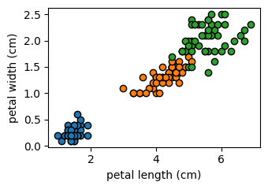
Feature selection: checking correlations
| sepal length (cm) | sepal width (cm) | petal length (cm) | petal width (cm) | |
|---|---|---|---|---|
| sepal length (cm) | 1.000000 | -0.106926 | 0.862175 | 0.801480 |
| sepal width (cm) | -0.106926 | 1.000000 | -0.432089 | -0.369509 |
| petal length (cm) | 0.862175 | -0.432089 | 1.000000 | 0.962577 |
| petal width (cm) | 0.801480 | -0.369509 | 0.962577 | 1.000000 |
Tuning max_depth
What do you expect?
Decision boundaries: max_depth=1
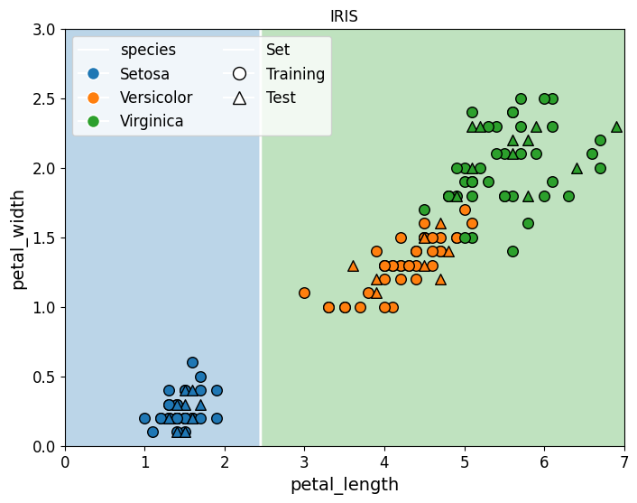Decision boundaries: max_depth=2
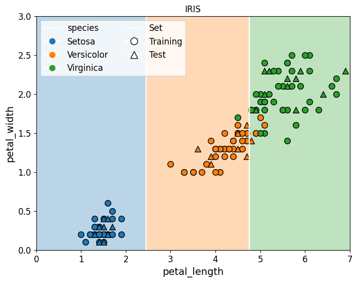Decision boundaries: max_depth=2 (changing the random seed)
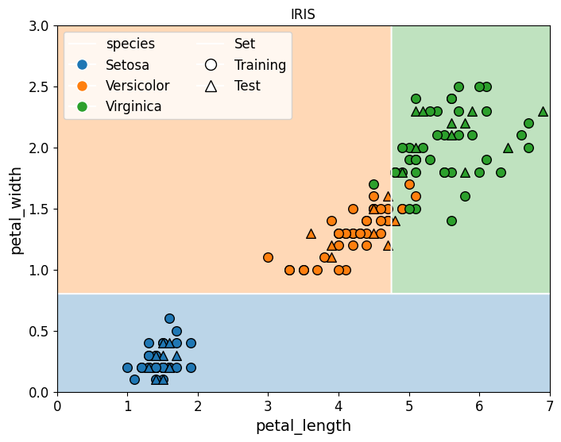Decision boundaries: max_depth=3
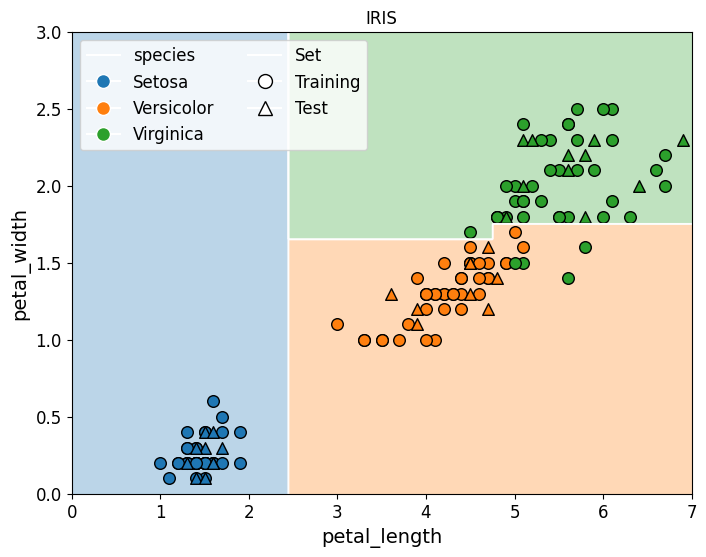Decision boundaries: max_depth=6
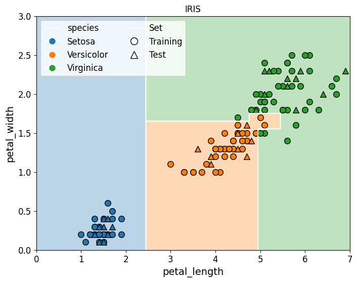Plotting the accuracy
Code
# Prepare to store max_depth values and corresponding accuracies
max_depths = range(1, 10)
train_accuracies, test_accuracies = [], []
for max_depth in max_depths: # Train decision trees with increasing max_depth
clf = DecisionTreeClassifier(max_depth=max_depth, random_state=seed)
clf.fit(X_train, y_train)
train_acc = accuracy_score(y_train, clf.predict(X_train)) # Compute accuracy for training set
test_acc = accuracy_score(y_test, clf.predict(X_test)) # Compute accuracy for test set
train_accuracies.append(train_acc)
test_accuracies.append(test_acc)
# Plot accuracies
plt.figure(figsize=(4, 3))
plt.plot(max_depths, train_accuracies, label="Training", marker='o')
plt.plot(max_depths, test_accuracies, label="Test", marker='o')
plt.xticks(max_depths)
plt.xlabel("max_depth")
plt.ylabel("Accuracy")
plt.legend()
plt.grid(True)
plt.tight_layout()Hyperparameter optimization
Hyper-parameters are parameters that are not directly learnt within estimators.
- In scikit-learn they are passed as arguments to the constructor of the estimator classes
- How do we tune hyperparameters?
Hyperparameter optimization
Hyper-parameters: parameters that are not directly learnt within estimators
- In scikit-learn they are passed as arguments to the constructor of the estimator classes
- Any parameter provided when constructing an estimator may be optimized
A search consists of:
- an estimator \((\checkmark)\)
- a score function \((\checkmark)\)
- a parameter space
- a method for searching or sampling candidates
- a cross-validation scheme
Parameter space (or search space)
Search Space: space where each dimension represents a hyperparameter and each point represents one model configuration.
Consider the following hyperparameters of a random forest:
max_depth: maximum depth of a single tre#estimators: number of trees in the forest
Assume that the domain of the two parameters is the following:
max_depth\(\in [1, 10]\)#estimators\(\in [2, 20]\)
Then, our 2D-search space is
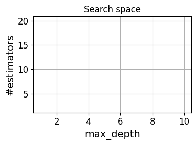Hyper-parameter tuning
There are many search algorithms:
- Grid search exhaustively tries every combination of the provided hyper-parameter values in order to find the best model.
- (Pure) Random search samples from the entirety of the search space
- It does not require to optimize a gradient, hence it can be used on functions that are not continuous or differentiable.
- Such optimization methods are also known as direct-search, derivative-free, or black-box methods.
If good parts of the search space occupy 5% of the volume the chances of hitting a good configuration is 5%.
The probability of finding at least one good configuration is above 95% after trying out 60 configurations (\(1 − 0.95^{60} = 0.953 > 0.95\))
Cross validation
How do we test the hyperparameter configurations?


Example of cross correlation

Random forest
Code
from sklearn.model_selection import RandomizedSearchCV
from sklearn.ensemble import RandomForestClassifier
from scipy.stats import randint
rf = RandomForestClassifier(random_state=seed) # Define a Random Forest Classifier
param_dist = { # Set up the parameter grid for random search
'n_estimators': randint(2, 200), # Number of trees in the forest
'max_depth': randint(2, 20), # Maximum depth of the tree
'min_samples_split': randint(2, 20), # Minimum number of samples to split a node
'min_samples_leaf': randint(1, 20), # Minimum number of samples in a leaf node
}
random_search = RandomizedSearchCV(rf, param_distributions=param_dist, n_iter=50, scoring='accuracy', cv=5, random_state=seed, n_jobs=-1) # Setup RandomizedSearchCV
random_search.fit(X_train, y_train) # Fit the random search model
print("Best Parameters from Random Search:", random_search.best_params_) # Output the best parameters
best_rf = random_search.best_estimator_
test_accuracy = best_rf.score(X_test, y_test) # Evaluate the model with the best parameters on the test set
print("Best Cross-validation Accuracy:", random_search.best_score_, "Test Set Accuracy with Best Parameters:", test_accuracy) # Output the best score
forest = plot_boundary(best_rf, "rf_cplot")Best Parameters from Random Search: {'max_depth': 4, 'min_samples_leaf': 3, 'min_samples_split': 2, 'n_estimators': 124}
Best Cross-validation Accuracy: 0.9583333333333334 Test Set Accuracy with Best Parameters: 1.0k-Nearest Neighbors
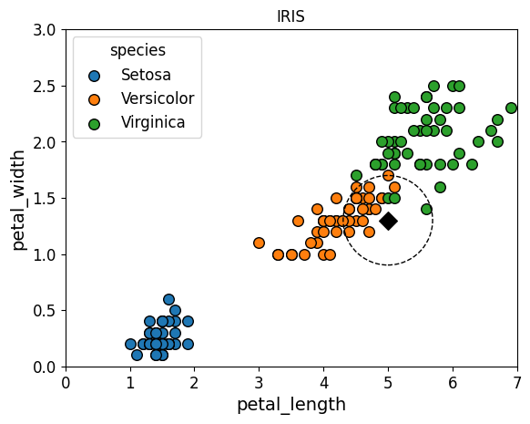Tuning k
What do you expect?
Decision boundaries: k=1 (no normalization)
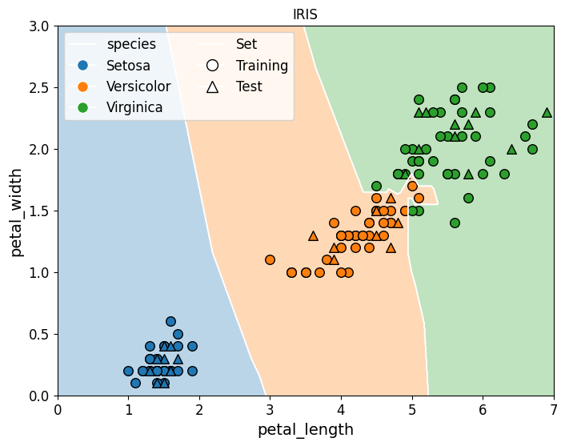Decision boundaries: k=1 (min-max normalization)
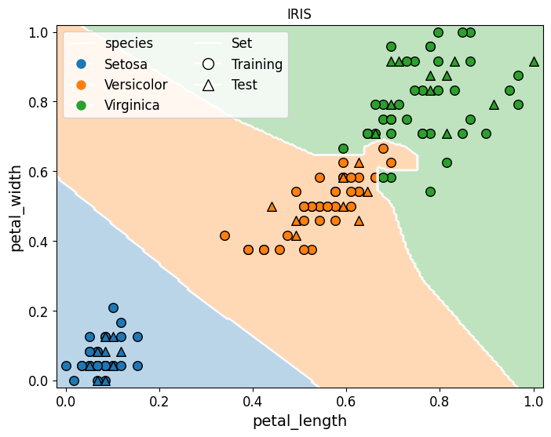Decision boundaries: k=10 (min-max normalization)
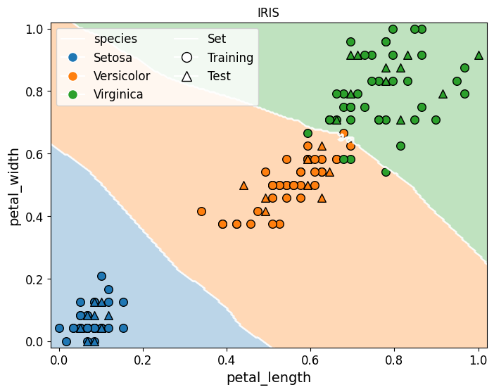Plotting the accuracy
Code
# Prepare to store max_depth values and corresponding accuracies
k_s = range(1, 10)
train_accuracies, test_accuracies = [], []
for k in k_s: # Train decision trees with increasing max_depth
knn = KNeighborsClassifier(n_neighbors=k)
knn.fit(X_train, y_train)
train_acc = accuracy_score(y_train, clf.predict(X_train)) # Compute accuracy for training set
test_acc = accuracy_score(y_test, clf.predict(X_test)) # Compute accuracy for test set
train_accuracies.append(train_acc)
test_accuracies.append(test_acc)
# Plot accuracies
plt.figure(figsize=(4, 3))
plt.plot(max_depths, train_accuracies, label="Training", marker='o')
plt.plot(max_depths, test_accuracies, label="Test", marker='o')
plt.xticks(max_depths)
plt.xlabel("k")
plt.ylabel("Accuracy")
plt.legend()
plt.grid(True)
plt.tight_layout()Perceptron
Perceptron is binary classifier. How can we use it in Iris?
One Versus All
One Versus All (OVA) strategy for multiclasses
- OVA provides a way to use binary classification for a series of yes or no predictions across multiple possible labels.
- Given a classification problem with N possible solutions, a OVA solution consists of N separate binary classifiers—one binary classifier for each possible outcome.
- During training, the model runs through a sequence of binary classifiers, training each to answer a separate classification question.
- Finally, pick the prediction of a non -zero class which is the most certain and use argmax of these score(class index with largest score) is then used to predict a class.
For example, given a picture of a piece of fruit, four different recognizers might be trained, each answering a different yes/no question:
Is this image an apple?
Is this image an orange?
Is this image a banana?
Is this image a grape?
Perceptron
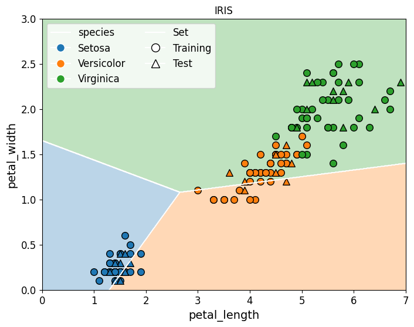Perceptron: changing the seed
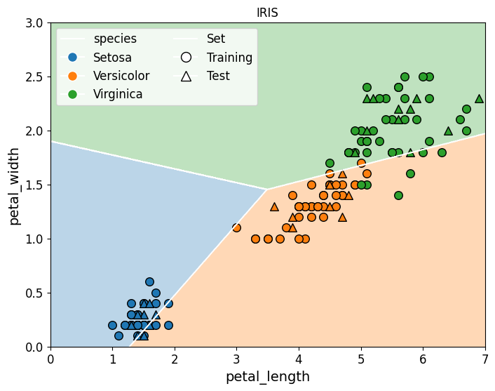Multi-layer perceptron
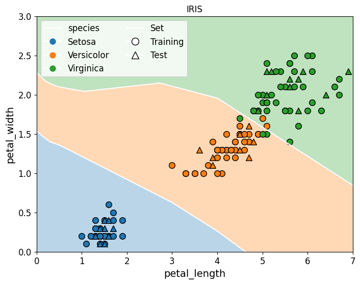Exercise
- Load the
winedataset fromsklearn - Train a decision tree
- … try different configurations of hyperparameters
- What is your best accuracy?
- What are the most relevant features?
Matteo Francia - Machine Learning and Data Mining (Module 2) - A.Y. 2025/26